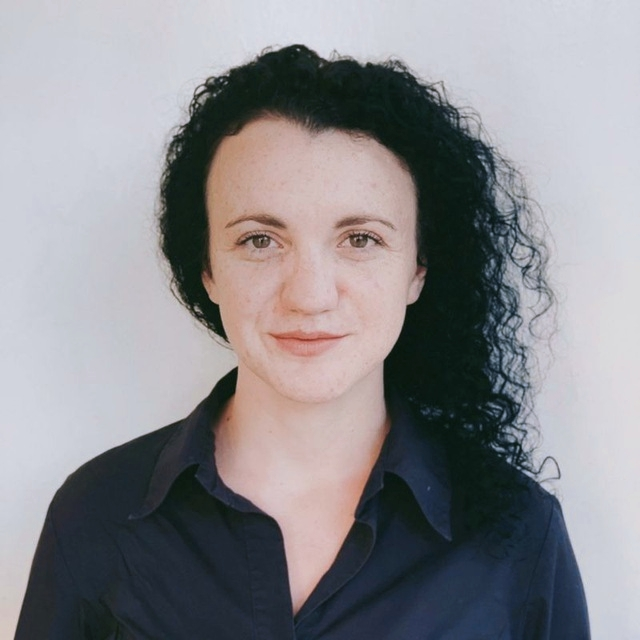

Костюк Юлія
Дитячий онколог
Досвід роботи
Завідувач відділення онкології
НДСЛ "Охматдит" Київ, Січень 2020 - Березень 2022
- Організація роботи відділення
- Розробка локальних протоколів, маршрутів пацієнта
- Управління персоналом
- Проведення високодозової ХТ у дітей з пухлинами ЦНС
Асистент кафедри педіатрії Івано-Франківський національний медичний університет Квітень 2018- Січень 2020
- Проводила навчальний процес з україномовними та англомовними студентами IV- VI курс
- Розробка навчально-методичних матеріалів для студентів
- Лікувальну робота на базі онкогематологічного відділення КНП "ІФ ОДКЛ".
Дитячий онколог
Івано-Франківська обласна дитяча лікарня 09.2018-01.2020
- Проведення диференційної діагностики онкологічних захворювань
- Застосування сучасних методів діагностики та лікування
- Здійснювалянагляд за побічними діями лікарських засобів
- динамічне спостередення стану пацієнтів на етапах лікування
- Надання невідкладної медичної допомоги
- проведення стернальної пункції, трепанопункції, люмбальної пункції
Освіта
- Дитяча онкологія в Харківська медична академія післядипломної освіти 2019 р.
- Спеціалізація Педіатрія в Івано-Франківський національний медичний університет 09.2010-06.2016

Контактна інформація
- Тел +380664457476
- E-mail juli90111@gmail.com
Навички
- Клінічне мислення
- Педіатрія
- Комунікація
- Командна робота
- Самоуправління
- Організація роботи
- Координація роботи
Мови
- Українська
- Англійська